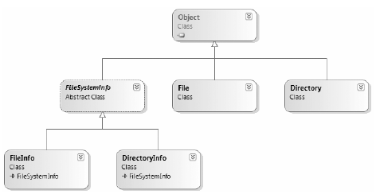

System.IO provides four classes that allow you to manipulate individual files, as well as interact with a machine’s directory structure. The first two types, Directory and File, expose creation, deletion, copying, and moving operations using various static members. The closely related FileInfo and DirectoryInfo types expose similar functionality as instance-level methods (therefore, you must allocate them with the new keyword). In Figure 20-1, the Directory and File classes directly extend System.Object, while DirectoryInfo and FileInfo derive from the abstract FileSystemInfo type.
Figure 20-1 The File- and Directory-centric types
FileInfo and DirectoryInfo typically serve as better choices for obtaining full details of a file or directory (e.g., time created, and read/write capabilities) because their members tend to return strongly typed objects. In contrast, the Directory and File class members tend to return simple string values rather than strongly typed objects.
The DirectoryInfo and FileInfo types receive many behaviors from the abstract FileSystemInfo base class. For the most part, you use the members of the FileSystemInfo class to discover general characteristics (such as time of creation, various attributes, and so forth) about a given file or directory. Table 20-2 lists some core properties of interest.
Table 20-2. FileSystemInfo Properties
| Property | Meaning in Life |
|---|---|
| Attributes | Gets or sets the attributes associated with the current file that are represented by the FileAttributes enumeration (e.g., is the file or directory read-only, encrypted, hidden, or compressed?). |
| CreationTime | Gets or sets the time of creation for the current file or directory. |
| Exists | You can use this to determine whether a given file or directory exists. |
| Extension | Retrieves a file’s extension. |
| FullName | Gets the full path of the directory or file. |
| LastAccessTime | Gets or sets the time the current file or directory was last accessed. |
| LastWriteTime | Gets or sets the time when the current file or directory was last written to. |
| Name | Obtains the name of the current file or directory. |
FileSystemInfo also defines the Delete() method. This is implemented by derived types to delete a given file or directory from the hard drive. Also, you can call Refresh() prior to obtaining attribute information to ensure that the statistics regarding the current file (or directory) are not outdated.